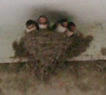
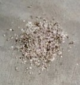

Free talk 雑談 .
（３２9）ツバメ年報 ２
約一ト月前に孵ったツバメのヒナ、５羽が順調に育った。そして２日前に１羽 巣立った。やはりエサを貰うのがうまいのが早く巣立つようだ。翌日にも残りの４羽も巣立つと思っていたが、今朝 まだエサをねだっていた（写真は今朝（7/9）午前10時頃）。ところが午後見たら、巣が空....なにはともあれ、全員 無事巣立って大変ウレシイ。(^-^) ＃これまでの経験で （数日は夜になると戻ってくる）と思っていたら、さきほど４羽は戻っていた。
オマケ
１カ月分のフン爆弾....